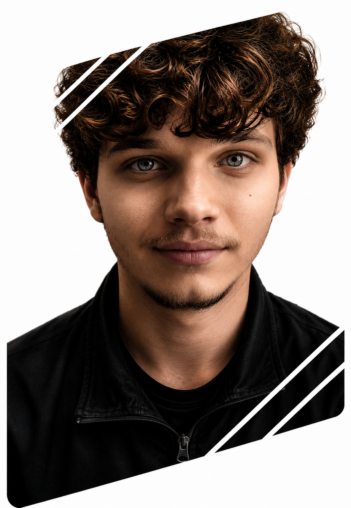
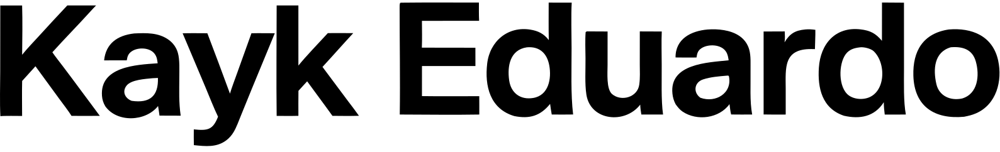

Desenvolvedor Fullstack
Java + Spring & React
Localizado em São Paulo, Brasil


Localizado em São Paulo, Brasil
Desenvolvedor em formação com experiência prática em projetos pessoais. Desenvolvimento de aplicações utilizando Java, Spring Boot, React e MySQL, aplicando conceitos de APIs REST, autenticação e arquitetura em camadas. Busco constantemente evoluir minhas habilidades por meio de estudos e desenvolvimento de novos projetos.
O Secret Wish é uma solução Fullstack completa para organização de Amigo Secreto. Diferente de ferramentas simples, ele possue chat em tempo real integrado. Nesse projeto eu fiquei responsável pelo desenvolvimento do backend.
Bikcraft é um site onde há catálogos de bikes. Onde você pode visualizar os produtos individualmente, versuas descrições, etc. Esse foi um projeto bem simples, para aprender mais sobre HTML e CSS.
Atualmente, sou estudante de ADS. Tenho como objetivo evoluir minhas habilidades técnicas, complementando a graduação com cursos especializados.
Já concluí uma formação em Java e Spring Boot e, no momento, estou me dedicando aos estudos de Front-end, ampliando meus conhecimentos para atuar no desenvolvimento de aplicações web completas.